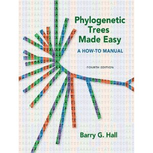

Biologists seem to seek “The One Tree” and appear not to be satisfied by a range of options. However, there is no logical difficulty with having a range of trees. There are 34,459,425 possible trees for 11 taxa (Penny et al. 1982), and to reduce this to the order of 10-50 trees is analogous to an accuracy of measurement of approximately one part in 106.
Many measurements in biology are only accurate to one or two significant figures and pale when compared to physical measurements that may be accurate to 10 significant figures. To be able to estimate an accuracy of one tree in 106 reflects the increasing sophistication of tree reconstruction methods. (Note that, on this argument, to identify an organism to a species is also analogous to a measurement with an accuracy of approximately one in 106.)
Estimating the reliability of evolutionary trees. (1986). Molecular Biology and Evolution. doi:10.1093/oxfordjournals.molbev.a040407
Most courses on phylogenies focus on getting data and building a phylogeny. Here we are going to focus on the problem of finding an existing phylogeny for a group of organisms, or generating one quickly if we can't find one. The perenial topic of phylogeny visualisation will also be discussed.
|  | Phylogenetic Trees Made Easy: A How-To Manual |
| Joe Felsenstein's list of phylogeny programs | |
| Page, R. D. M. (2011). Space, time, form: viewing the Tree of Life. Trends in Ecology & Evolution. http://dx.doi.org/10.1016/j.tree.2011.12.002 |
BLAST is a tool enables you to search for similar DNA sequences, it also builds a tree. As an example, try BLASTing this sequence (JN313785):
DNA Barcode Browser is a tool that combines geographic searches and a BLAST-like interface to DNA barcodes.
Given that phylogenies are fundamental to comparative biology you'd hope there was a dataabse that stored them, so that if you needed a phylogeny for, say, birds, you could retrieve the lastest tree and use it. Unfortunately we are some way from this goal. TreeBASE is a database of phylogenies, but it contains only a small fraction of published evolutionary trees.
This diagram shows the disparity been the number of papers published on molecular phylogeny each year and the number of phylogenies deposited in TreeBASE:
Another problem with TreeBASE is that its search interface is not terribly intuitive (see TreeBASE II makes me pull my hair out for some examples).
Go to TreeBASE and search for the phylogeny of a group of organisms. Did you find a tree for the taxa you are interested in?
There have been several attempts to come up with databases of trees, or better ways to interact with TreeBASE.
The rise of molecular methods, coupled with techniques for assigning dates to nodes based on fossils has resulted in numerous dated phylogenies being published. TimeTree is one syntheses a large number of tres to create a dated tree of life. Given two taxa you can query the database to retrieve estimates of when those taxa last shared a common ancestor.
There isn't an open API for TimeTree, but there is an iPhone app which enables you to find the divergence dates for a pair of taxa.
For a (somewhat biased) overview of phylogenetic visualisation see my talk at VIZBI (you should also check out the other VIZBI talks on Vimeo, see http://vimeo.com/vizbi).
A number 3D phylogeny viewers have been developed, such as:
I'm skeptical about the utility of 3D viewers, see for example Why 3D phylogeny viewers don't work. Matt Yoder has mounted a vigorous defense, see You are in a maze of twisty little passages, all alike).
Viewing very large trees remains one of the great challenges in phylogeny visualisation. One direction that seems promising is the "tile and zoom" interface familiar to anyone using Google Maps. A naive approach is to zoom in and out of trees in the same way as a map, but this doesn't take into account the shape of the tree.
If we constrain the way the tree is zoomed we get a better effect:
Another promising direction is the use of touchscreen interfaces. Previously confined to research labs, the advent of the iPad and iPhone has made this technology ubiquitous.
OneZoom is a fractal-based interactive tree viewer that runs in a web browser. It has a "wow" factor, although I'm a bit sceptical about the utility of the a viewer that radically distorts the viewing space.
We badly need a comprehensive, easy to use database of evolutionary trees.
One strength of TreeBASE is that it makes its data avialble via an API. This means that people can write programs in their own favourite language. For example, if R is your thing, then this a package for TreeBASE (see the tutorial, and you can get the package from CRAN).
It is difficult to find the answers to very basic phylogenetic questions, such as "what is the phylogeny of taxon x?", or "where are the gaps in our phylogenetic knowledge?".
Relatively few phylogenies end up in public databases. Why is this, and what can we do about it?
Visualisation of phylogenies on the web is still unsatisfactory. There is also an opportunity to develop interactive displays of phylogenies within journal articles. Many trees are now too big to print on a single article page. Computer screens (in most cases) aren't any bigger, but the ability to zoom in and out of a tree, or distort the space in which it is drawn should enable us to explore the whole tree. The trick is to find a way of doing this that doesn't confuse more than it helps.